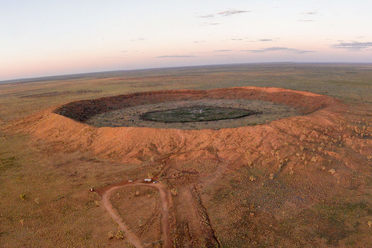
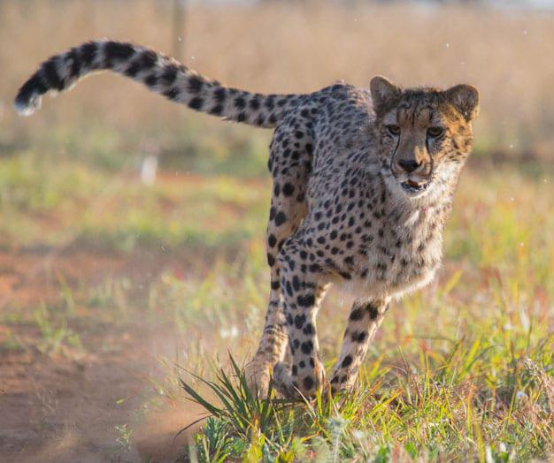
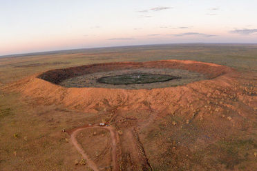
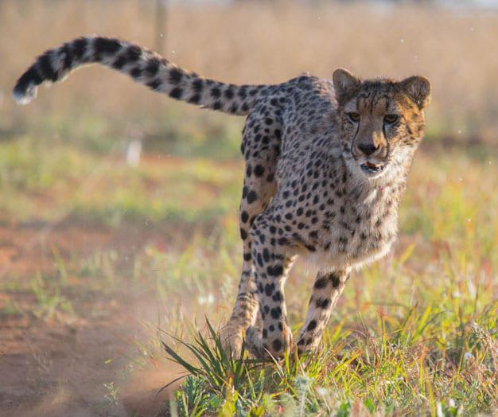

Free State
In the northeastern Free State, nestled in the rolling foothills of the Maluti mountains, the Golden Gate Highlands National Park is the province's prime tourist attraction. The park gets its name from the brilliant shades of gold cast by the sun on the spectacular sandstone cliffs, especially the imposing Brandwag or Sentinel Rock, which keeps vigil over the park.
The sandstone of this region has been used for the lovely dressed-stone buildings found on the Eastern Highlands, while decoratively painted Sotho houses dot the grasslands. Some of South Africa's most valued San (Bushman) rock art is found in the Free State, particularly in the regions around Clarens, Bethlehem, Ficksburg, Ladybrand and Wepener.
 



Click here for more info on the Free State